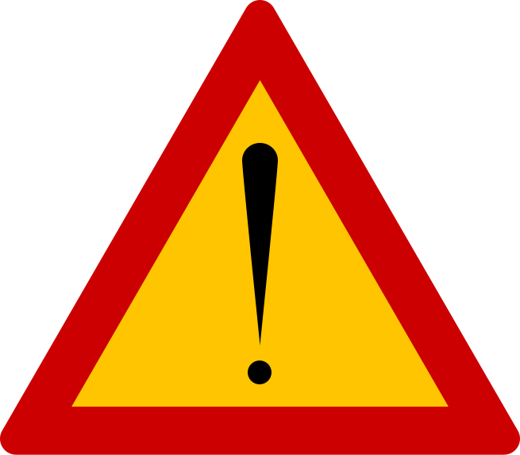
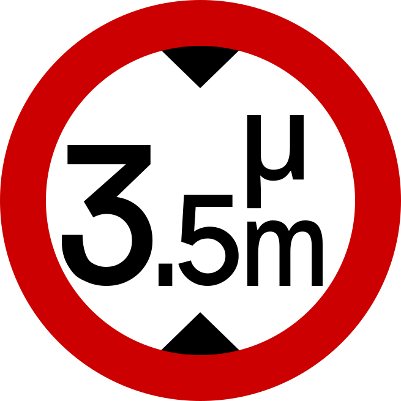
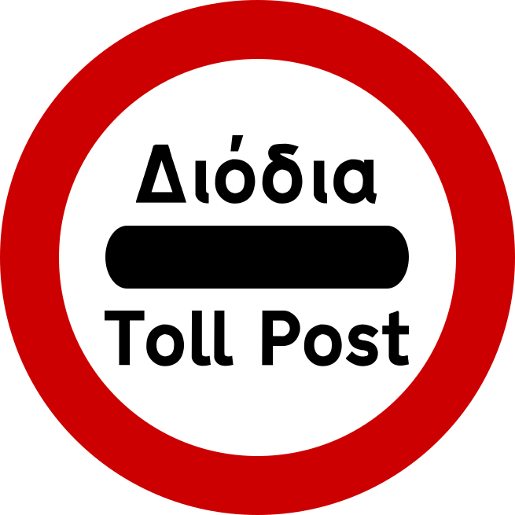
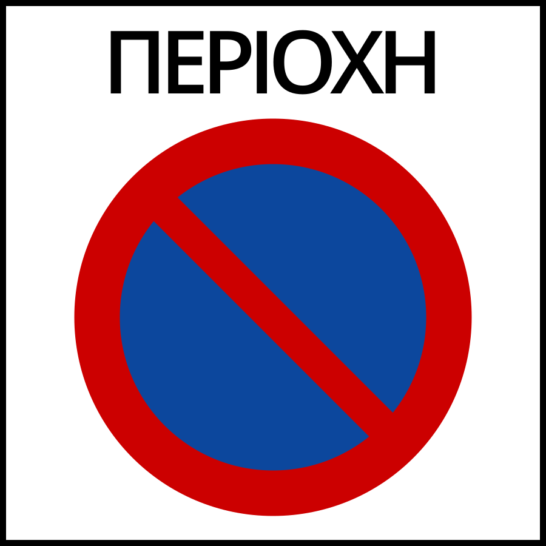
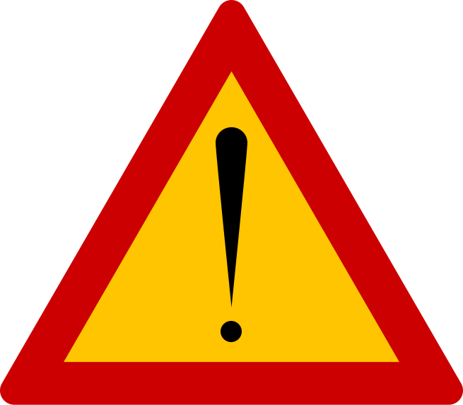
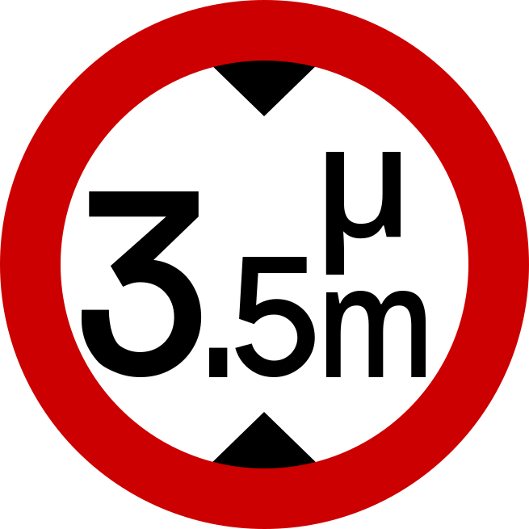
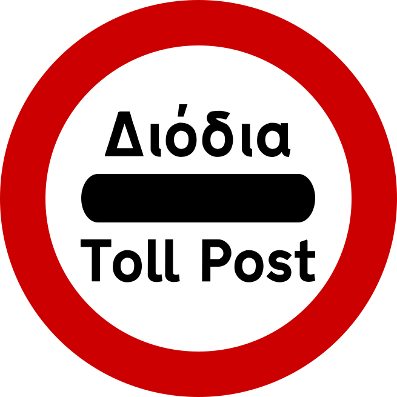
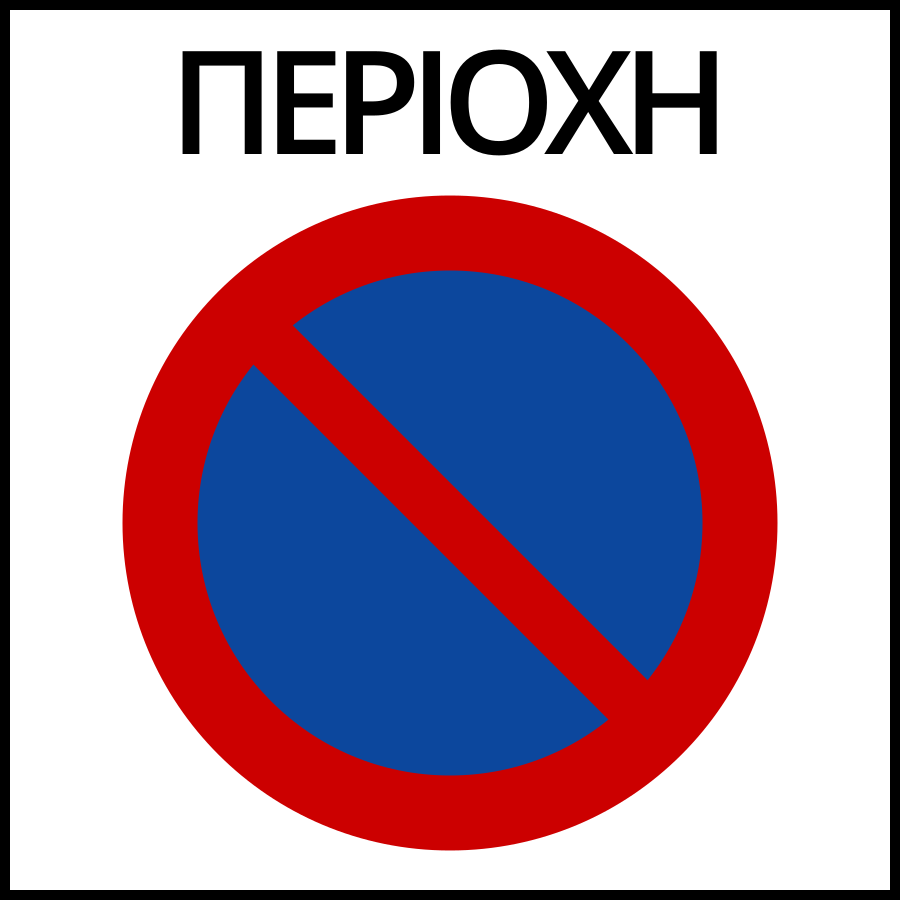

国・地域の見分け方
- ギリシャ文字がある
- Kandylakiaと呼ばれる小さなチャペルのようなモニュメントが道端に多くある(参考文献 Kandylakia of Greece by Mary Papoutsy)
- 警告看板がオレンジ背景 (参考文献 Comparison of European road signs)
- 電柱が木でできていることが多い
- 白黒のシェブロンが多い
- 白の2本線の中央分離帯が多い (参考文献 plonkit)
- 黒背景に赤色の反射板のボラードがある
見つかる標識

 








白の2本線の中央分離帯があるのはヨーロッパではほぼギリシャ (参考文献 plonkit)。
Kandylakiaと呼ばれる小さなチャペルのようなモニュメントが道端に多くある 。交通事故などが発生した場所にある。奇跡的に助かったり、逆に不運にも命を落としてしまった現場付近にあるらしい(参考文献 The Miniature Roadside Chapels of Greece)(参考文献 Kandylakia of Greece by Mary Papoutsy)。

By Pjotr Mahhonin - Own work, CC BY-SA 4.0, Link
矢印は アルバニアと同じく黒背景に白矢印がほとんど 。稀に例外もある 。

.jpg#/media/File:Holidays_Greece_-_panoramio_(488).jpg)
By Roton Piotr, CC BY-SA 3.0, Link
ギリシャは日差しが強く石灰も多いため白い壁の建物が多い。屋根は赤褐色の色が多い 。ただし離島や一部地域では赤褐色の瓦が一切使用されず平らな屋根の時も多い（ シフノス島）。
北マケドニアは速度表示の看板の背景がオレンジのことが多いけれど、ギリシャは白が多い。
州・地域の絞り込み
- 2から始まる市外局番が書いてあるならば場所を絞り込める
- 21： アテネ(Αθήνα)
- 231： テッサロニキ(Θεσσαλονίκη)
- 266： ケルキラ(Κέρκυρα)島
- 28： クリティ(Κρήτη)島
- トルコの近くの離島もぎりぎりギリシャ領
- 平地と傾斜のある場所では農業のタイプが異なる
(参考文献 Characteristics of cropland: Crete and Messara Valley)
- 本土側の平地はコットンや灌漑農業が多い
- 本土側の傾斜がある場所や離島ではオリーブやベリーの畑が多い
- クリティ(Κρήτη)島もオリーブのプランテーションが多い
- ブドウ畑が全域にありワインが輸出されている (参考文献 Wine map regions of Greece)
- 観光地は海沿いに多い
- 町名の語尾から地域を絞り込める時がある (参考文献 Σερφάροντας στην γεωγραφία των ελληνικών τοπωνυμίων)。例外も多め。

トルコの近くの離島もぎりぎりギリシャ領
— Μείνε (@meine_geo) May 31, 2023

青いエリアは観光が盛ん (参考文献 Polixeni Iliopoulou, Panagiotis Stratakis.『Aspects of Rural Development in Greece: Indicators, Policies and New Opportunities』)。
参考文献やマップを眺めながらなんとなく作成してみたイメージ図 (参考文献 Σερφάροντας στην γεωγραφία των ελληνικών τοπωνυμίων)。
都市・町の絞り込み
- イドラ島は条例で自動車が禁止されておりトレッカーのみが存在する (参考文献 イドラ島)
- ケア島は雨が少ない気候で丘と石壁のある家が多い
- シフノス島は港以外は観光地化が進んでおらず遺跡や教会が多くある (参考文献 Sifnos)。
- 緑の大き目のゴミ箱に都市名が書いてあることがある
- タクシーの色が都市ごとに異なる

By theusmanmali, CC BY-SA 3.0, Link
木の生えていない丘が多くデータ上は砂漠気候らしい 。 アンドラのような白くない石壁で作られた家も多い (参考文献 Kea island)。2023年4月以降に撮影された場所しかない。

遺跡や教会 が多く見つかる。教会は島の中に300箇所以上ある (参考文献 シフノス島)。観光地化は進んでおらず、舗装されていない道を歩くことも多い 。陶芸が盛んらしい。赤い屋根の家が無いのも離島感がある 。
ゴミ箱に都市名が書いてあることがあるのでゴミ箱にギリシャ文字があるか確認して、都市名に見えたらマップで探してみる。左がΚομοτηνή、右がΑθήνα。


{kind=link}
コメント欄